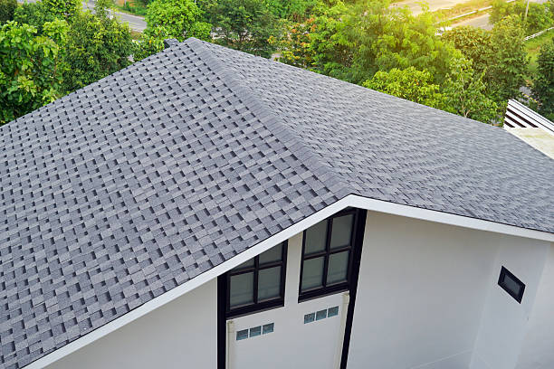
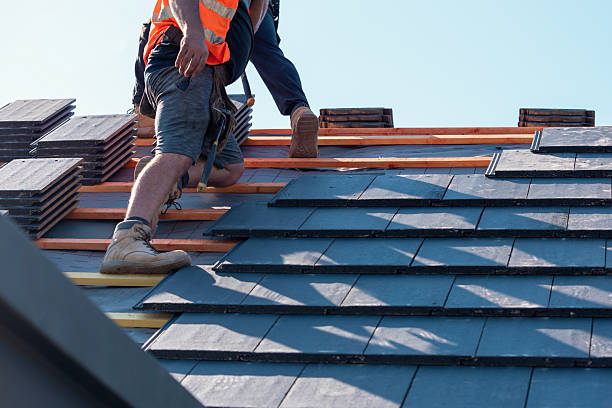

Roofing care that feels right for the home, not just the roof line.
Residential roofing in Jersey City should balance weather protection, curb appeal, budget, and peace of mind. We help homeowners sort through repair needs, replacement timing, and maintenance priorities without making the process harder than it needs to be.

Roof inspections
Understand aging shingles, drainage, flashing wear, and visible damage.
Repair planning
Address isolated issues before they spread into interior or structural concerns.
Replacement support
Know when repair stops being cost-effective and a new roof becomes the smarter move.
Long-term upkeep
Protect the home with service that focuses on performance and appearance together.

What homeowners usually need
Straight answers about whether the roof should be repaired or replaced.
Many residential calls come down to one question: can the current roof still do the job, or is it time to plan for a bigger upgrade? We help homeowners understand the condition of the system first, then build the recommendation from there.
Repair-first thinking
If a focused repair keeps the roof performing well, that should stay on the table.
Upgrade when it makes sense
When replacement offers better long-term value, we explain why in clear terms.
Warning sign
Interior stains
Ceiling or wall marks can point to active leak paths above.
Warning sign
Missing shingles
Open areas leave the home exposed to moisture and weather stress.
Warning sign
Aging roof system
Older materials may still function, but their margin for failure can shrink quickly.

Need residential roofing help in Jersey City?
We can help you move from concern to a clear next step, whether the roof needs repair work, a full replacement plan, or a better inspection of the problem.
Schedule an Estimate